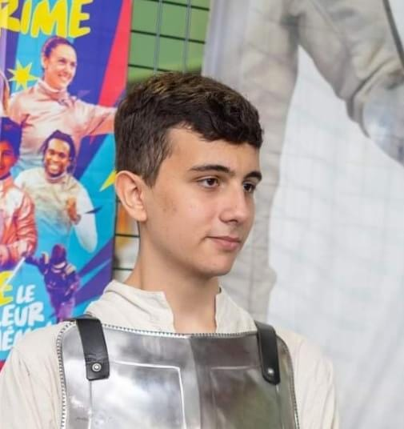

BILGER-BAVEREL Axel
11/02/2005
36 avenue Emile Zola
+33 07 69 20 48 11
axel9121089@gmail.com

Formation
Septembre 2024 - Auj.
2023
2020
BTS SIOINGETIS, Paris
Baccalauréat général Lycée Rosa Parks, Montgeron
Spécialisation Mathématiques, N.S.I (Numérique Sciences Informatiques)
Brevet des collègesCollège Alphonse Daudet, Draveil
Expérience professionelle
Décembre 2023 - Mars 2024.
Mars 2022
2020
Employé polyvalent en restaurantIBIS HOTEL, Évry-Courcouronnes
Doublage/Imitation voix Warhammer Fantasy - Games Workshop
Service de restauration et d'hôtellerieIBIS HOTEL, Évry-Courcouronnes
Stage de 3ème
Langues & Compétences informatiques
Français
Anglais
Langage informatique
CourantNatal
Courant C2
Python, HTML, C, C++, C#